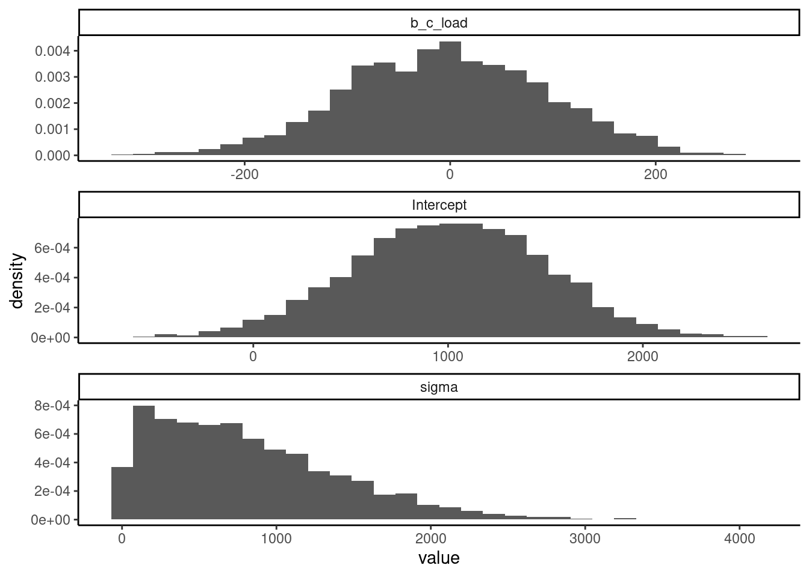

Exercise 4.1 A simple linear regression: Power posing and testosterone.
Load the following data set:
data("df_powerpose")head(df_powerpose) |>gt()
id
hptreat
female
age
testm1
testm2
29
High
Male
19
38.725
62.375
30
Low
Female
20
32.770
29.235
31
High
Female
20
32.320
27.510
32
Low
Female
18
17.995
28.655
34
Low
Female
21
73.580
44.670
35
High
Female
20
80.695
105.485
The research hypothesis is that on average, assigning a subject a high power pose vs. a low power pose will lead to higher testosterone levels after treatment. Assuming that you know nothing about typical ranges of testosterone using salivary measurement, you can use the default priors in brms for the target parameter(s).
Investigate this claim using a linear model and the default priors of brms. You’ll need to estimate the effect of a new variable that encodes the change in testosterone.
The data set, which was originally published in Carney, Cuddy, and Yap (2010) but released in modified form by Fosse (2016), shows the testosterone levels of 39 different individuals, before and after treatment, where treatment refers to each individual being assigned to a high power pose or a low power pose. In the original paper by Carney, Cuddy, and Yap (2010), the unit given for testosterone measurement (estimated from saliva samples) was picograms per milliliter (pg/ml). One picogram per milliliter is 0.001 nanogram per milliliter (ng/ml).
term
estimate
std.error
conf.low
conf.high
(Intercept)
4.37
4.61
−4.77
13.26
hptreatLow
−8.70
6.78
−21.98
4.59
sd__Observation
20.51
2.37
16.42
25.74
Exercise 4.2 Another linear regression model: Revisiting attentional load effect on pupil size.
Here, we revisit the analysis shown in the chapter, on how attentional load affects pupil size.
Our priors for this experiment were quite arbitrary. How do the prior predictive distributions look like? Do they make sense?

Is our posterior distribution sensitive to the priors that we selected? Perform a sensitivity analysis to find out whether the posterior is affected by our choice of prior for the \(σ\).
Term
model 4.2.a
model 4.2.b
Estimate
Est.Error
Q2.5
Q97.5
Estimate
Est.Error
Q2.5
Q97.5
b_Intercept
701.27
19.96
660.99
740.25
700.77
19.29
662.47
738.24
b_c_load
33.84
11.93
10.66
57.94
33.76
11.71
10.74
56.45
sigma
128.73
15.47
102.59
163.05
125.32
14.12
100.90
156.28
Our data set includes also a column that indicates the trial number. Could it be that trial has also an effect on the pupil size? As in lm, we indicate another main effect with a + sign. How would you communicate the new results?
term
estimate
std.error
conf.low
conf.high
(Intercept)
701.68
17.31
668.02
735.71
c_load
31.95
9.98
11.82
51.88
c_trial
−5.50
1.48
−8.35
−2.54
sd__Observation
108.46
12.62
86.85
136.24
Exercise 4.3 Log-normal model: Revisiting the effect of trial on finger tapping times.
We continue considering the effect of trial on finger tapping times.
Estimate the slowdown in milliseconds between the last two times the subject pressed the space bar in the experiment.
median effect 2.5% 97.5%
0.09640319 0.07190941 0.12111526
mean effect 2.5% 97.5%
0.09713902 0.07250484 0.12203735
How would you change your model (keeping the log-normal likelihood) so that it includes centered log-transformed trial numbers or square-root-transformed trial numbers (instead of centered trial numbers)? Does the effect in milliseconds change?
median effect 2.5% 97.5%
0.02107170 0.01554976 0.02656155
mean effect 2.5% 97.5%
0.02122792 0.01567363 0.02676155
Exercise 4.4 Logistic regression: Revisiting the effect of set size on free recall.
Our data set includes also a column coded as tested that indicates the position of the queued word. (In Figure 4.13 tested would be 3). Could it be that position also has an effect on recall accuracy? How would you incorporate this in the model? (We indicate another main effect with a + sign).
term
estimate
std.error
conf.low
conf.high
(Intercept)
1.93
0.31
1.35
2.57
c_set_size
−0.18
0.08
−0.34
−0.01
c_tested
−0.03
0.08
−0.19
0.14
Estimate Q2.5 Q97.5
0.8699825 0.7948330 0.9290336
Exercise 4.5 Red is the sexiest color.
Load the following data set:
head(df_red) |>gt()
risk
age
red
pink
redorpink
0
19
0
0
0
0
25
0
0
0
0
20
0
0
0
0
20
0
0
0
0
20
0
0
0
0
18
0
0
0
The data set is from a study (Beall and Tracy 2013) that contains information about the color of the clothing worn (red, pink, or red or pink) when the subject (female) is at risk of becoming pregnant (is ovulating, self-reported). The broader issue being investigated is whether women wear red more often when they are ovulating (in order to attract a mate). Using logistic regressions, fit three different models to investigate whether being ovulating increases the probability of wearing (a) red, (b) pink, or (c) either pink or red. Use priors that are reasonable (in your opinion).